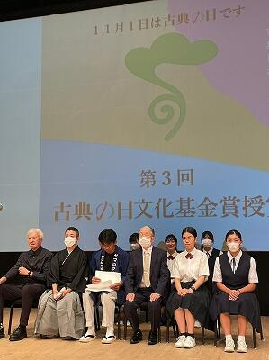
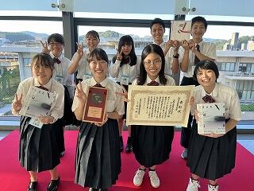
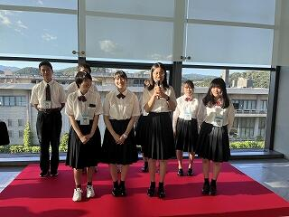

SAGANO BLOG
- >
- SAGANO BLOG
- >
- 中学生向け
2023年09月07日
アカデミックラボ「京・平安文化論」ラボです。
「京・平安文化論」ラボでは、『源氏物語』などの平安文学の研究はもとより、古典離れを課題として探究活動を行っています。
この取組が認められ、第３回「古典の日文化基金未来賞」をいただくことになりました。
この賞は、古典の研究・普及・啓発に取り組む個人や団体に授けられます。
令和５年９月３日京都コンサートホールで行われた授賞式に行ってきました。
名誉総裁の彬子女王殿下をはじめ、都倉俊一文化庁長官、京都府知事、京都市長など、多くの来賓の方々がいらっしゃる盛大な授賞式でした。他の受賞者の皆さんも、古典に真剣に向き合って、伝統や文化を守っていこうとする素晴らしい取組をされていました。
 
ラボ生の声を紹介します。
Q１ 今の気持ちを教えてください。
たいへん光栄なことと感じています。私たち「京・平安文化論」ラボは、毎年、嵯峨野高校の２年生の１６名が探究活動を行っています。先輩からのバトンを引き継ぎ、毎年アップグレードさせてきた様々な企画をこのような形で評価していただき、とても嬉しく思います。
１４の企業様、市内の11ヶ所の神社やお寺、京都先端科学大学教授の山本淳子先生、イラストレーターのながたみどり先生、そして、古典の日推進委員会の皆様のご支援がなければ、今日を迎えることはできなかったと思っております。私たちの「挑戦したい」という気持ちを支えてくださることに、感謝申し上げます。
Q２ 苦労したことはありますか？
まず苦労したのは、お寺や神社に協力を依頼することから始まった６年前の先輩方だと思います。また、コロナ禍による活動の制限もありました。しかし、英語版のサイトを完成させることができました。英語版のサイトを作る際には、日本固有の概念を英語で伝えるのが難しいと感じました。
Q３ 今後の目標は？
嵯峨野高校の中だけではなく、より多くの皆様に古典に親しんでいただけるような取組を目指していきたいと思っています。今年は、洋菓子のジュヴァンセル様にお願いして、ケーキや焼き菓子、チョコレートで、『源氏物語』の登場人物を表現します。ジュヴァンセル様の店頭でも購入していただけます。販売時期が決まりましたらお知らせいたします。今回、賞をいただいたことによって、より多くの方に私たちの活動を知っていただき、そのことが、古典に興味を持っていただけるきっかけになればと思っています。京都の魅力や、平安文化の魅力を広めていけるよう、今後も頑張っていきます。この度は、本当にありがとうございました。
 
2023年09月06日
嵯峨野高校のとこのは祭（文化の部）では、1年生は20分の演劇、2年生は40分の演劇、3年生は15分のパフォーマンスをクラスで発表します。
それぞれのクラスの個性が溢れ、工夫の凝らした発表でした。皆で協力し創り上げた演劇やパフォーマンスを通して、仲間との絆が一層深まったようです。
文化系クラブも、体育館やコモンホール、各フロアー特別教室などで日頃の練習の成果発表をしました。部員たちの日常生活では見せない一面が見られるので、どのクラブの発表も大盛況でした！
また、生徒会企画もお笑いトークショーやのど自慢、大喜利大会など大いに盛り上がりました。生徒はもちろん、教員も存分に楽しみ、充実した2日間でした。

2023年09月01日
.jpg "体育館リハーサルではクラス一丸となって取り組んでいます。")
.jpg "音響や照明も生徒達自身で行います。")
.jpg "日に日に増える大道具。")
.jpg "校内のあちこちでダンスや劇、パフォーマンス練習をしています。")
9月5日6日に開催される「とこのは祭文化の部」に向け、今週火曜日から本格的にクラスの文化祭活動が始まっています。
今年度は4年ぶりにコロナ前の実施形態に戻した文化祭・体育祭を行います。昨年度まではなかった取組が増え、生徒達は思い切り活動しているようです。
3年生もこの期間、この時間だけは受験勉強を忘れ、活動を楽しんでいます。残暑厳しい日々ですが、熱中症対策をしっかりとりながら、各クラスの個性を舞台発表で存分に表現して欲しいと思います。
2023年07月06日
今年もこすもす杯を開催します！ This year's Cosmos Cup is happening soon!
令和5年 第22回「こすもす杯」中学生英語朗読コンテストの予選への募集が始まっています。 The Application period for the Cosmos Cup Junior High School English Contest has started.
「朗読コンテスト」では、初見の英文を読解する力に加え、それらをジェスチャーや声音を用いて表現豊かに伝える力を審査します。英語が好き！ 表現力に自信あり！英語力を鍛えたい！ と思ったら、ぜひ「こすもす杯」にチャレンジしてみてください。英語力に磨きがかかります！In this "live reading" style contest, the ability to comprehend and interpret English sentences at first sight, as well as the expressive ability to convey the meaning of the passage richly, while using gestures and appropriate vocalization, will be judged. This contest is for those who feel: "I like English!" "I'm confident in my expressiveness!" "I want to improve my English!" If you are one of these people, we want you to apply! Please try the "Cosmos Cup". Polish your English skills and maybe win the contest
予選応募締切は8月4日（金）、本選は9月9日（土）です。The application deadline for the preliminary round is Friday, August 4th, and the final round is Saturday, September 9th.
予選から本選までの詳細は「こすもす杯」応募サイトをご覧ください。Please see the "Cosmos Cup" application site for details from the preliminary round to the final round.
https://sites.google.com/sagano.org/cosmoscup/home
「こすもす杯中学生英語朗読コンテスト応募サイト」
"Cosmos Cup Junior High School English Reading Contest Application Site"
2023年03月24日
３月２４日、第17回科学地理オリンピック日本選手権および第19回国際地理オリンピック選抜大会で銅メダルを受賞した3年生川﨑さんが校長室に受賞の報告に来てくれました。
銅メダル受賞の朗報は卒業式前日に届きました。そして本日、国際地理オリンピック日本委員会から届いた賞状、メダルの授与とともに、遅ればせながら嵯峨野高校教育賞の表彰も行いました。
賞状授与の後、川﨑さん、橋長学校長、加藤第３学年部長と談話する時間がありました。
先生方から「地理オリンピックが開催される予選の１２月、本選の２月中旬は受験勉強の大変な時期。それでも挑戦しようと思った理由は？」との質問に川﨑さんは「２年生の時にもチャレンジしたが、その時は僅差で２次選抜には行けなかった。去年から３年生でも挑戦しようと決めていた。」「１２月は大学入学共通テストのため地理の勉強をしていたが、２月の二次選抜は、国公立大学前期入試１週間前だったこともあり、地理オリンピックの勉強は出来ていなかったが、結果が出せて嬉しい。」と語ってくれました。
また、「大学二次試験１週間前に地理オリンピックがあり、それぞれの挑戦で緊張はしなかった？」という質問には、「陸上部に所属していて、試合にも出ていた。陸上のスタートはフライング１回で失格になる。その時のプレッシャーや緊張感を経験していたので、大学入試は落ち着いて取り組むことができた。」と答えてくれました。
日々の学習だけでなく、部活動や校外の活動にも真摯に取り組み、それぞれの活動の中から多くの学びを得て素晴らしい結果を残してくれました。
川﨑さんは、この春から京都大学農学部に進学し、ロボットファーミングについて学ばれます。
大学でも更なる飛躍を期待しています！
おめでとうございます！

学校長、第３学年部長とともに記念写真
2022年10月26日
10月22日(土)の進学説明会にご参加いただいた皆様ありがとうございました。
当日、説明会に参加していた広報委員の生徒たちと交流はしていただけましたでしょうか。
朝の広報委員のミーティングで２年生のリーダーから、今回の説明会は中学3年生の皆さんとお会いするのが最後の機会なので、嵯峨野生の魅力をしっかり伝えられるようほんの少しの積極性を持って笑顔で対応しようという声掛けがありました。
リーダーの声掛けに応えるように、生徒たちそれぞれが責任感をもって各仕事に取り組んでくれていたように思います。1年生も質問されたことに自分の言葉で丁寧に応対してくれていたり、校舎内の誘導にも慣れてきた様子で頼もしい姿を見せてくれました。
1年生も2学期の半ばになると校舎のことも熟知してきたので自信をもってご案内。
自然体のにっこり笑顔に、私たち教職員も癒されます。
本校が誇る図書室。この日は清々しい秋晴れで、窓からの光と風が気持ち良い空間に。
説明会後、広報委員の生徒たちに橋長校長から労いの言葉をいただきました。
広報委員会は11月の中学2年生対象説明会でもみなさんのご来場を心よりお待ちしながら準備を進めてきます。
2022年10月14日
9月23日（金）、第21回こすもす杯中学生英語朗読コンテストを開催しました。昨年度の第20回こすもす杯は、予選後にコロナ感染症が拡大したため、やむなく本選中止となりましたが、今年は予選を勝ち抜いた中学生８名を迎え、無事に開催できたことをうれしく思います。
さて、予選の時も思ったのですが、応募者の中学生のみなさん、表現力が高い！ 本選でも、その場で渡された課題文を20分の時間内に自分のものにし（interpret）、言葉の持つ感情を自分の感性で巧みに表現してくれました。審査結果は以下の通りです。参加者全員の健闘を称えたいと思います！
ところで、この日、もうひとつ感心したことがあります。こすもす杯の運営をESS部員が手伝ってくれたのですが、彼らのコミュニケーション力とホスピタリティに驚きました。参加してくれた中学生に「緊張してないですか？」、「大丈夫ですよ、がんばってください！」と声をかけていて、その自然で親切なふるまいに感動しました。ESS部のみなさん、本当にありがとう！
【 審査結果 】
最優秀賞 若狭留名さん 立命館中学校
（京都府教育委員会教育長賞）
優秀賞 松村美柚さん 京都市立西京高等学校附属中学校
（京都府立嵯峨野高等学校長賞）
奨励賞 中村阿璃愛さん 京田辺市田辺中学校
努力賞 石山響子さん 京都市立西京高等学校附属中学校
2022年09月20日
9月17，18日の進学説明会にご参加下さった皆様ありがとうございました。
この記事では、広報委員の活躍と舞台裏を紹介します。
広報委員会は１，２年生で構成されています。
説明会当日の活動だけでなく、配布資料の準備に加え、広報委員会の生徒が考えたおもてなしの準備も行います。
当日、まずは打ち合わせから。
教員から全体の説明の後、生徒たちの担当する仕事のセクションに分かれて打ち合わせをします。２年生は２年連続で広報委員になってくれている生徒も多く、これまでの気付きや注意点を説明会初心者の生徒にレクチャーします。
受付担当の生徒は、中学生が嵯峨野生と初めて顔を合わす大切な時。
さわやかな笑顔と丁寧な対応を心がけています。
全体会の様子です。
進学説明会の生徒プレゼンは１年生の担当です。プレゼンする生徒は広報委員ではありませんが、この日のために夏休み明けから準備してきました。
プレゼン内容を生徒と打ち合わせをしている中で、ある生徒が「私は秋から冬にかけての勉強が計画通りに進まなかったから、受験生には同じ失敗をして欲しくないんです。」と話していました。短い時間でしたが、参加された皆さんに生徒たちのそんな思いが伝わっていることを願います。
司会の生徒は全体会で重要な役割です。待っている間も姿勢を崩さず、立派です。
全体会の間、司会以外の生徒は休憩を取ります。
控室を覗くと、時間を有効に使い自習に励んでいました。

2022年07月11日
誰が決めたのか、9月14日は「コスモスの日」だそうです。
勝手に本校にゆかりのある様な気になります。
文化祭も終わり、平常授業を開始しています。残念ながら、国内の感染者数は依然として高止まり傾向、本校生にも感染者は出ています。
十分とはいきませんが授業配信など工夫をして、平常の学校生活を維持しています。
週末には中学生対象の進学説明会を開催します。昨日の放課後、生徒のボランティアスタッフが当日の配付資料準備をしてくれました。
本校茶室「里仁軒」横の「百日紅（サルスベリ）」はまもなく「100日」なのか、開花期も終盤を迎えようとしています。季節は着実に秋へ。
高校３年生にとっても、中学３年生にとっても大切な季節です。
今説明会も感染対策をとりながら、開催すべく準備を進めています。
お申込みいただいた中学3年生の皆さん、保護者の皆さまも、体調管理にはくれぐれもご留意いただき御参加ください。
2022年06月24日
嵯峨野高校の芸術『工芸』の授業を紹介します。
嵯峨野高校の芸術は、1年次に音楽、美術、工芸(染色)、工芸(陶芸)から1科目選択します。
『工芸』が染色と陶芸に分かれて開講されている学校は珍しく、芸術の専門学科以外では、京都府唯一だと思います。
1年間を通じて学ぶ工芸。今回は陶芸の授業の様子をお見せします。
電動ロクロは15台あります。1人１台で思う存分作陶できます。
休憩時間も黙々と集中・・・土の触感が心地よく、夢中になります。
全員初めての経験ですが、お互いにコツを教えあったり、工夫しながらお茶碗サイズの器を目指して制作します。
こちらは手びねりでのマグカップを制作中。「手になじむかたち」がテーマの課題です。工夫を凝らしたデザインのカップが出来上がっています。丁寧に作業することで愛着も沸きます。
成形を終えた作品たち。窯に入れる前によーく乾燥させます。
作品は嵯峨野高校自慢の電気窯で焼き上げます。陶芸実習室の施設設備は、芸術大学並みです。以前訪問された芸術大学の先生も驚かれていました。
ぜひ、学校説明会に来て実際に施設を見ていただければと思います。
2022年05月31日
中学３年生対象「学校説明会」に向けて、ボランティアスタッフの第１回ミーティング（顔合わせ）が行われました。
本校の説明会は在校生が重要な役割を担ってくれます。
当日の受付、案内、誘導、司会進行、施設見学の際の説明の他、在校生による生徒相談etc
今後２年生を中心にリーダーを選出して、自分たちに何ができるか、どのようにお迎えするかについてミーティングを重ねていきます。
新たな企画や、ささやかな気づきが生まれる瞬間です。
この会に同席したある教員の言葉を紹介します。
「自分たちの学校の良さ、ありのままの姿を、正しく中学生の皆さんや同伴される保護者の方々に伝えるためには、まず自分のこと、自分自身について見つめ直すことが大切です。自分の普段の学校生活を振り返ってみてください。」
例年1年間の活動を通じて、彼ら自身は無論のこと、集団としても大きく成長してくれます。
今年の学校説明会は７月16日・17日（受付は6月14日開始）です。この日に向けて準備を整えていきます。
2022年05月30日
「明日は弁当ないし、これで何か買って食べといて」
「うん」
「ごめんな、最近忙しくて」
「別にええよ。学食あるし」
口数は少ないものの、通じ合っている、こんな会話はどこの家庭でもおありでしょう。
ある朝、券売機前で出会った１年生、彼はいつも始業の1時間くらい前に登校して、朝の静かな教室で自習をするそうです。
いつもはお家の方にお弁当を作っていただいているそうですが、
この日は都合で学食へ。登校して、すぐに食券を購入していました。
1日の予定を考えて、無駄なく過ごすための行動です。
午後から３時間の授業と放課後の部活動のエネルギー源確保。
今日も目一杯の一日が始まります。
嵯峨野高校は朝8:35からＳＨＲ（ショートホームルーム）があります。
上記の様に学食もあります。（現在はコロナ禍でテイクアウト販売のみ）
2022年05月25日
1学期中間テスト中、1年生にとっては高校生活初の定期テストです。
大会直前以外の部活動は活動休止です。
放課後
主たちのいない、無色・無音のグランド
体育館
テニスコート
格技場
明日26日でテストも終了
上の施設のほかプール、トレーニング室など、
いつもの音が響き渡る日常に戻ります。
7月16日・17日の中学３年生対象学校説明会では、部活動見学も予定しています。
2022年05月23日
薔薇の季節も終盤です。
毎朝、誰もが通る昇降口、その奥に１枚の額が飾られています。
ＣＭ等様々なＢＧＭでもおなじみの「ばらが咲いた」の歌詞が書かれています。
何年も前、当時の校医の先生から寄贈していただいたものです。

{kind=link}
{kind=link}
{kind=link}
{kind=link}
{kind=link}
{kind=link}
{kind=link}
{kind=link}
{kind=link}
{kind=link}
{kind=link}
{kind=link}
{kind=link}
{kind=link}
{kind=link}
{kind=link}
{kind=link}
{kind=link}
{kind=link}
{kind=link}
{kind=link}
{kind=link}
{kind=link}
{kind=link}
{kind=link}
{kind=link}
{kind=link}
{kind=link}
{kind=link}
{kind=link}
{kind=link}
{kind=link}
{kind=link}
{kind=link}
{kind=link}
{kind=link}
{kind=link}
{kind=link}
{kind=link}
{kind=link}
{kind=link}
{kind=link}
{kind=link}
{kind=link}
{kind=link}
{kind=link}
{kind=link}
{kind=link}
{kind=link}
{kind=link}
{kind=link}
{kind=link}
{kind=link}
「ばらが咲いた、ばらが咲いた、真っ赤なばらが...」
冒頭の歌詞は年代を問わず、多くの人が口ずさめるものです。しかし２番となると？？
「ばらが散った ばらが散った いつの間にか、ぼくの庭は 前のように 淋しくなった」
この歌の主人公は、文字通り薔薇色の人生から一転、悲しい状況に。
しかしながら続きの歌詞では、
「淋しかったぼくの心に ばらが咲いた。ばらよばらよ 心のばら いつまでも ここで咲いてておくれ」
「ばらが咲いた ばらが咲いた ぼくの心に、いつまでも散らない 真っ赤なばらが」
部活動に打ち込んできた生徒たちにとって、大事な試合の季節です。
３年生にとっては高校生活最後の試合でもあります。
中間テストもあり、計画的な学習による両立を目指して、踏ん張りどころです。
嵯峨野生はこれからどのような花を咲かせてくれるのか。
楽しみの蕾が膨らみます。
{kind=link}
5月22日、京都市植物園の「嵯峨野」も蕾でした。
2021年07月13日
令和３年 第20回「こすもす杯」中学生英語朗読コンテストの予選への応募が始まりました。
昨年度、新型コロナウイルス感染症の感染状況を鑑みて実施を見送った「こすもす杯」は、今年度より「朗読コンテスト」として新しい形式となりました。「朗読コンテスト」では、初見の英文を理解、解釈する理解力に加え、それらをジェスチャーや声音を用いて豊かに伝達する表現力を審査します。英語が好き！ 表現力に自信あり！ 英語力を鍛えたい！ と思ったら、ぜひ「こすもす杯」にチャレンジしてください。英語力に磨きがかかります！
予選応募締切は８月20日（金）、本選は９月25日（土）です。
予選から本選までの詳細は「こすもす杯」応募サイトにてご覧ください。
https://bit.Ly/cosmoscup
＊画像２枚
「第20回こすもす杯中学生英語朗読コンテスト応募サイト」
{kind=link}
{kind=link}
2020年07月06日
日頃は、本校教育について御理解と御協力をいただき厚くお礼申し上げます。
さて、例年実施しております「こすもす杯中学生英語暗唱大会」について、現在発生している新型コロナウイルス感染症が拡大している状況を受け、協議の結果、開催中止を決定いたしましたので、お知らせいたします。
たくさんの生徒達をはじめ、参加者、関係者の健康・安全面を第一に考慮した結果、中止することにいたしました。開催を楽しみにしてくださった皆様には、御迷惑をおかけしますが、御理解をいただきますようお願い申し上げます。
2020年06月05日
今回は校舎の外を中心に様々な施設を紹介します。３年間の高校生活を快適に過せる環境が整っています。
本校は入口が３か所（正門、東門、南門）あります。
{kind=link}
{kind=link}
{kind=link}
{kind=link}
{kind=link}
{kind=link}
〒616-8226
京都市右京区常盤段ノ上町15番地
TEL 075-871-0723 FAX 075-871-0724
E-mail [email protected]
Copyright (C) 京都府立嵯峨野高等学校 All Rights Reserved.